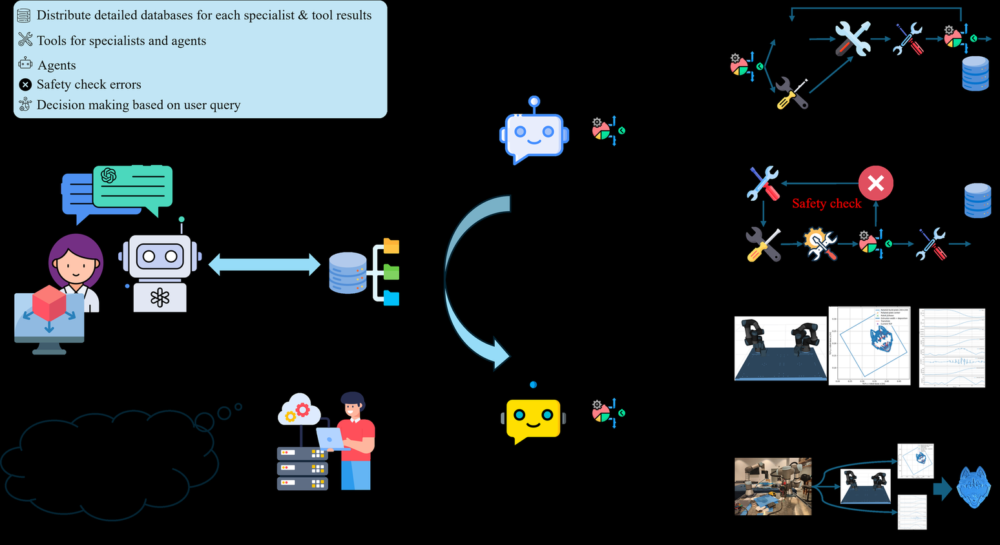
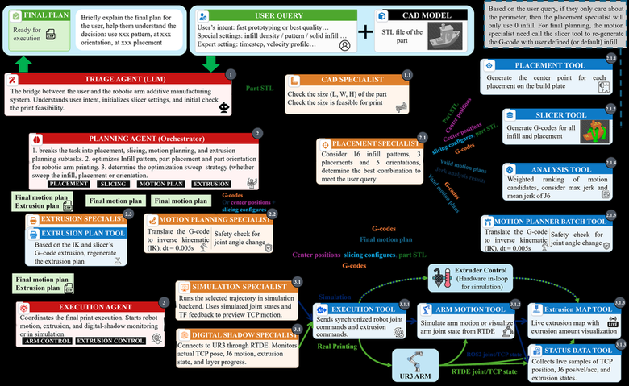
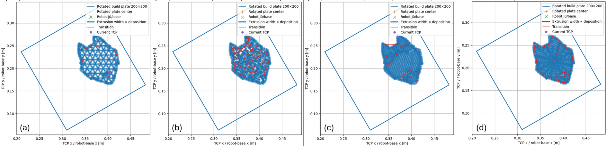

Slicer plans that look favorable in part coordinates can turn infeasible or robotically unfavorable on a real manipulator, because slicing, orientation and placement interact through kinematics. A-RAM closes the loop: an LLM triage agent turns intent and a part file into a schema-constrained request, a deterministic Planning Agent runs the search, and domain tools score slicing, placement, inverse kinematics, trajectory timing, Joint-6 jerk and extrusion, all watched by a layer-wise digital shadow.
Robotic additive manufacturing escapes gantry kinematics but entangles decisions: slicer choices plus part orientation set the path, while orientation plus workspace placement decide kinematic feasibility. Existing AM tools, LLM decision aids and digital shadows never evaluate these coupled choices together before execution.
An agent-specialist-tool framework: the LLM interprets objectives and constraints and encodes its reasoning in a schema-constrained request, the Planning Agent instantiates the matching search workflow, and quantitative tools supply the evidence for each candidate plan.
Evaluated on a six-axis robotic-arm cell through case studies spanning expert-specified planning, goal-only planning, objective-dependent infill screening and geometry-driven planning, with digital-shadow visualization monitoring deposition layer by layer during printing.
The headline table screens realizable infill patterns at 90 and 100% density: rectilinear logs 12,220.33 mm extrusion over 8,815.74 mm of path in 1,135.08 s at 90%, while concentric reaches 12,632.71 mm over 9,228.12 mm at 100%, with grid, triangles, stars and line filling out the comparison.
| 2-45-7 Infill pattern | L_e (mm) | Infill path (mm) | t_f (s) | L_e (mm) | Infill path (mm) | t_f (s) |
|---|---|---|---|---|---|---|
| rectilinear | 12220.33 | 8815.74 | 1135.08 | 12486.36 | 9081.77 | 1137.91 |
| grid | 12167.21 | 8762.61 | 1200.27 | -- | -- | -- |
| triangles | 12157.48 | 8752.88 | 1186.18 | -- | -- | -- |
| stars | 12071.30 | 8666.71 | 1183.80 | -- | -- | -- |
| line | 12188.57 | 8783.97 | 1172.86 | -- | -- | -- |
| concentric | 12229.98 | 8825.38 | 1192.90 | 12632.71 | 9228.12 | 1247.24 |
| honeycomb | 12295.04 | 8890.45 | 1289.16 | -- | -- | -- |
| 3dhoneycomb | 12652.44 | 9247.84 | 1306.53 | -- | -- | -- |
| gyroid | 11995.10 | 8590.50 | 1184.12 | -- | -- | -- |
| cubic | 12121.89 | 8717.30 | 1203.00 | -- | -- | -- |
| adaptivecubic | 11417.62 | 8013.03 | 1113.70 | -- | -- | -- |
| supportcubic | 11417.62 | 8013.03 | 1113.70 | -- | -- | -- |
| hilbertcurve | 11703.31 | 8298.72 | 1753.49 | 12025.40 | 8620.81 | 1900.25 |
| archimedeanchords | 11728.88 | 8324.29 | 1244.84 | 12023.45 | 8618.85 | 1317.26 |



Abstract
Robotic additive manufacturing (AM) extends material-extrusion printing beyond gantry kinematics but makes process planning robot-dependent. A slicer-generated plan that appears favorable in part coordinates can become infeasible or robotically unfavorable on a manipulator because slicer-process decisions and part orientation determine the generated path, while part orientation and workspace placement affect its kinematic realization. Existing AM tools, large language model (LLM)-based decision-support methods, and digital-shadow systems do not provide integrated pre-execution evaluation of these coupled decisions. This paper presents agentic robotic additive manufacturing (A-RAM), an agent-specialist-tool framework that converts user intent and a part file into traceable, execution-ready plans. The LLM interprets manufacturing objectives and constraints, identifies prescribed and searchable planning variables, and encodes this reasoning in a schema-constrained request; a deterministic Planning Agent instantiates the corresponding search workflow, while domain tools compute quantitative evidence for slicing, placement, inverse kinematics, trajectory timing, Joint-6 jerk, and extrusion. The framework is evaluated on a six-axis robotic-arm AM cell through three case studies covering expert-specified planning, goal-only planning, objective-dependent infill screening, and geometry-dependent orientation-placement selection. Across the evaluated candidate sets, selected plans achieve up to 53.5% lower maximum Joint-6 jerk and 48.3% lower mean absolute Joint-6 jerk than the least favorable valid candidates, while objective-specific infill screening yields motion-plan completion times up to 40.1% shorter and extrusion paths up to 12.7% shorter than the corresponding least favorable screened patterns.